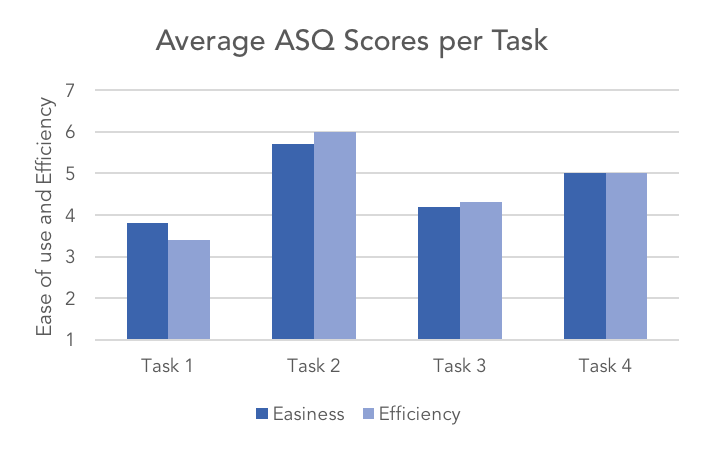
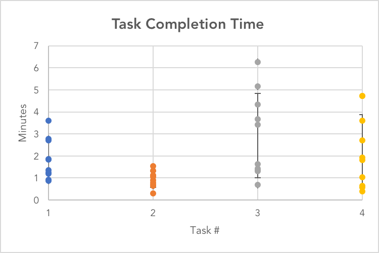
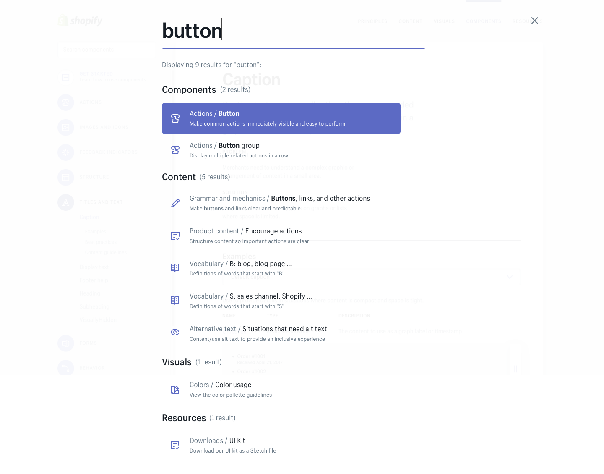
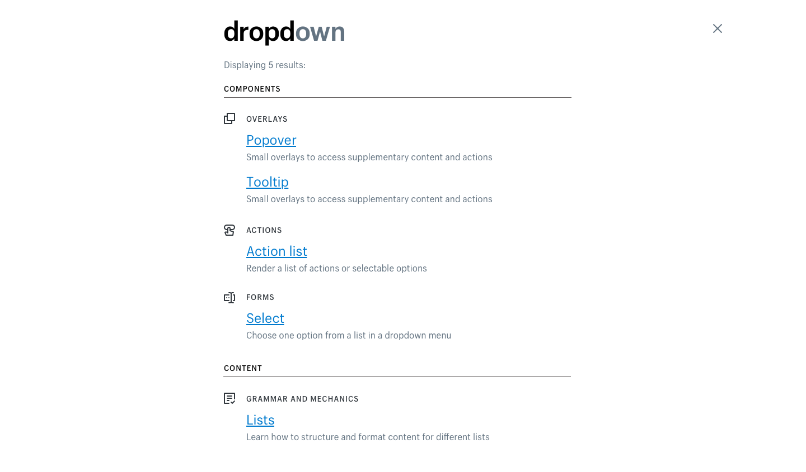
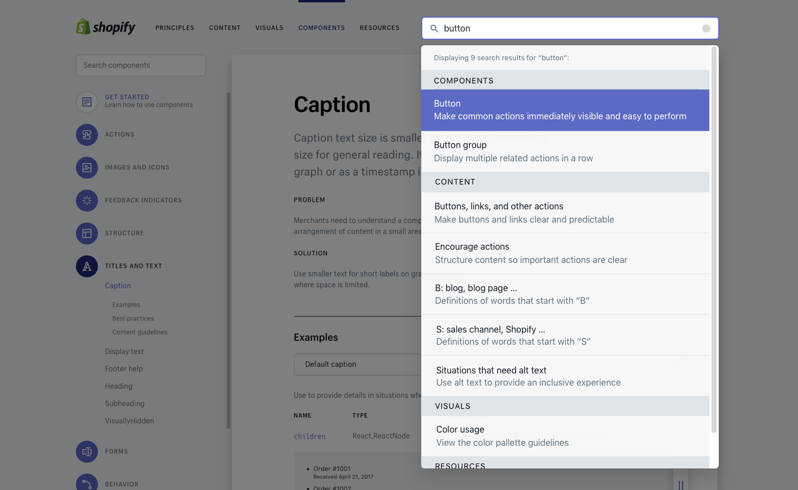

Yang Chen
Product Designer, Engineer, A Cappella Nerd
Hi there! I'm Yang.
I'm a product designer (and occasional front-end developer) looking to make positive impact through holistic and empathetic design. See some of my past projects.
Thanks for visiting, and have a super day!
I'm a product designer in my final semester of Systems Design Engineering with a minor in music at the University of Waterloo. I was most recently a design intern at Shopify, and a product manager at Mattermost. I've also done front-end development and research at Manulife's innovation lab and Sunnybrook Research Institute.
In my spare time, I arrange and sing 10-part harmonies as the musical director of my a cappella group The Committee, obsess over maps, and throw stones at houses (only in the Winter, though).
Global Search for Polaris @ Shopify
Interaction Design, Visual Design, UX Research
Contextualized, designed, and launched responsive global search for Shopify's design system.
ViewOnline PlayStation Store @ Sony
Interaction Design, Mobile Design, UX Research
Re-designed the online shopping experience for PlayStation Store users on mobile.
ViewUX Research Workshop @ Boltmade
UX Research, Public Speaking
Designed and delivered a public workshop on card sorting and its use as an effective UX research tool.
ViewThe Committee
Personal Project. Under construction.
Website for my a cappella group.
Tools used: HTML/CSS/JS. Bootstrap.
Personal Website
Personal Project. Under construction.
Personal website as a portfolio. Coded from scratch using Bootstrap.
Tools used: HTML/CSS/JS. Bootstrap.
Sketches
Various sketches.
Tools used: Pencil and Ink Pen.

I come across interesting websites, articles, and videos about design/UX from time to time. Other than everything by Julie Zhuo (who I look up to a lot), here are some of my favourites:
7 Things Every Designer Needs to Know about Accessibility
Jesse Hausler
Introducing: U.S. Web Design Standards
Mollie Ruskin
https://medium.com/@USDigitalService/introducing-u-s-web-design-standards-aff21383afd6
Field Research at Uber
Grace Vorreuter, Amy Chong, Alisa Weinstein
https://medium.com/uber-design/field-research-at-uber-297a46892843
UserOnboard Teardowns
Samuel Hulick
My Two Years as an Anthropologist on the Photoshop Team
Charles Pearson
8 Cities That Show What the Future Will Look Like
Wired Magazine
http://www.wired.com/2015/09/design-issue-future-of-cities/
10 Designs Fighting The Devastating Effects of Climate Change
Laura Feinstein
http://magazine.good.is/articles/10-designs-climate-change
Facebook Slows the Internet for Staffers on ’2G Tuesdays’
Georgia Wells
http://blogs.wsj.com/digits/2015/10/27/facebook-slows-the-internet-for-staffers-on-2g-tuesdays/
The Psychologist’s View of UX Design
Susan Weinschenk, Ph.D.
https://uxmag.com/articles/the-psychologists-view-of-ux-design
Why designers can’t stop reinventing the subway map
Emily Badger
Why city flags may be the worst-designed thing you've never noticed
Roman Mars
Music Production Project
December 2017
For my Fall 2017 music technology course project, I created a short piece inspired by Bjork's Medulla album in Ableton Live using learned techniques such as automation, EQ, and sidechaining. I also experimented with new plug-ins, like a vocoder and harmonizer to explore the effect of processed vocals.
ICCA 2017 Competition Set
August 2016 - January 2017
Over the course of half a year, I iteratively co-arranged a 12-minute competition set for the International Championship of Collegiate A Cappella for my co-ed a cappella group, The Committee. It has 8 songs, 2 mash-ups, and up to 13 unique parts at once, each catered specifically to our singers. You can view 3 of the 24-page set below (click to expand). We were fortunate enough to be awarded "Outstanding Vocal Percussion" and advance to the 3rd round as Semifinalists (top 80 of 400 groups competing) with this set. Watch our semifinal performance here.
A Cappella Arrangement for 60-Person A Cappella
January - April 2015
As Musical Director for ACE, University of Waterloo's largest and un-auditioned a cappella group, I scored an 8-part arrangement of Sing by My Chemical Romance. I wanted to create a story with the arrangement. It starts out with a post-apocalyptic vibe that becomes hopeful and triumphant. I sampled a section of Sing by The Carpenters, a song popularized by Sesame Street, as a transiiton. Watch our performance here.
Global Search for Polaris
During my internship with Shopify, I worked as the designer on the UX acceleration and tooling branch within the UX Systems team to improve usability of Polaris’ online style guide.
Role: Product designer, UX Researcher
Team: Mentor, content strategist, developer/technical lead
Time: ~2 months
View project live
Background
Polaris is...
Shopify’s design system, launched in April 2017 to help the entire company create user experiences for merchants efficiently and consistently. Polaris is comprised of a Sketch UI kit, a component library, and a comprehensive online style guide. Internal and external developers, designers, content strategists, and other stakeholders from various disciplines use Polaris on a daily basis to design and build Shopify products.
PROBLEM
The Polaris style guide has a large amount of content, and users were struggling with the complexity of components, their naming conventions, and other design system concepts. The existing search at the time only searched within the components page, and required exact wording. Having a search function is a best practice for content-heavy sites such as the Polaris style guide. As a reference product, the Polaris style guide needs to have high findability to accelerate workflows.
User Research
The UX systems team did not have a user researcher at the time, so I independently created and ran a study to see how users interacted with the style guide website to create context and requirements for the global search project, as well as another Polaris project I was working on.
Purpose
Identify pain points in current workflows and have quantitative metrics to compare and validate UX improvements, including future iterations of search.
Research Goals
1. Utility of the feature: How well does style guide work without global search? How
does the current component search work? How well will global search work once
it’s implemented?
2. Usability/Findability: How easy and quick is it to find content you’re looking for
within the style guide?
3. Information Architecture/ Discoverability: How intuitive are the groupings and
navigation structure of the content and components? Do people use the existing
components search bar?
Approach
Participants: 11 people were recruited, with a variety of disciplines (designer, front-end developer, back-end developer, content strategist), variable familiarity with Polarity, and one external partner.
Tasks: Each participant was asked to complete 4 tasks that required finding content within the style guide: 2 that involved answering general questions, 2 that involved finding exact answers.
Metrics: Task completion time, task completion success rate, modified After-Scenario Questionnaire (ASQ) responses, qualitative comments.
Findings
While there were many interesting observations and conclusions drawn, here were some high-level interesting ones:
1. People understood the main nav categories ("Visuals", "Content"). People were able to navigate to the correct first-level category, usually right away, but struggled to find the content once there. This suggests users have a strong mental model and understanding of the main categories, and should continue to be used (e.g. in search results).
2. Less time taken does not mean a better experience. Although users completed task 1 faster than task 4 (an average of 110 seconds vs. 133.1 seconds, respectively), the participants felt less satisfied with how long and how easy task 1 took. The following graph shows the average ASQ scores where 1 indicates lowest satisfaction and 7 indicates highest satisfaction with how well the task went.

This suggests that regardless of the actual time participants currently take to complete tasks on the style guide, the quality of experience is not directly correlated, and thus there is opportunity and reason to improve the usability of the style guide (e.g. with a search feature.)
3. Polaris needs to cater to a wide variety of users. The graph below shows the distribution of task completion times per task.

What is interesting is that task 3 has a bi-modal distribution: half of the participants took above three minutes to
complete the task, while the other half took under two minutes. ASQ responses reflect this
similarly. This suggests that some participants were more familiar with the task and could
complete it easily, and other participants had a significantly harder time. This not only
once again suggests a need for usability improvements, but also that the design of the search needs to
cater to a variety of users, who use Polaris in different contexts and have varying needs.
Visual/Interaction Design
Before any pixel-pushing, I created sketches for search concepts with basic, high-level pros and cons. I knew that search would likely be placed in the upper-right corner, which a study showed most people expect for a search to be. With the user research, we discussed with stakeholders what we wanted to accomplish with the search, and we iterated, diverged, and converged heavily. Here are three mock-ups that represented the main promising ideas.
Alternative #1

The first option is a full-screen modal that opens when users click search. The user can use keyboard navigation, and results are split into high-level categories, with sub-categories indicated by their icon.
Pros:
Quick to navigate
Search term (user action) is prominent
All categorical details are maintained
Cons:
Actual search result not prominent
Difficult to scan
White is not easily read on dark background
Icons don't actually mean anything
Can't display many results at once
Fullscreen interrupts flow
Difficult to engineer on mobile
Alternative #2

The second option is another full-screen modal, but the user clicks on the search result link, and results are split into high-level categories, with sub-categories indicated by their icon.
Pros:
Search term is prominent
Search results are prominent
All categorical details are maintained
White-space
More similar to existing webpage-based search results
Cons:
Icons don't actually mean anything
Can't display many results at once
Too many levels in hierarchy
Doesn't match existing Polaris text styles
Fullscreen interrupts workflow
Alternative #3

The third option is a drop-down that appears below the search box, accessible from any page. The user can use keyboard shortcuts to navigate the results.
Pros:
Easy to scan
Necessary categorical details are maintained
Quick to navigate
Matches existing styles
Maintains activity before search
Smaller perceived affordance to search
Can display many results at once
Not cluttered with too many details per result
Cons:
White is not easily read on purple (distracting)
Categorical data not obvious
Alternative #3 was chosen to move forward with for the final design. It prioritzes accelerating workflows and allowing users to get to what they want to without overloading them with too much information in the search. Some more feedback was gathered to produce the final design.
Final Design
View project live
1. Quick and Easy
Non-intrusive search works quickly to accelerate the user's workflow with minimal effort, while providing just enough detail in the results.
2. Dynamic and Helpful
The search offers helpful suggestions and popular searches to allow users to recover from error.
3. Responsive and clean
The search works beautifully on mobile and offers intuitive entry and exit for the feature.
Next Steps
1. Analytics: analytics have been put into search to keep track of keywords to inform popular searches and improve the metadata for the algorithm. This will provide better results based on what people are actually typing to look for content.
2. Benchmark study: the benchmark study will be run again against the initially measured metrics to validate and track utility of the search feature, as well as other improvements to the style guide.
3. New features: including the user's most recent searches in the pre-search state and error state will allow users to access their most used items quickly and recover from error. As well, as more content is added, more categories may be needed, and thus may need simple filtering to search within a specific area.